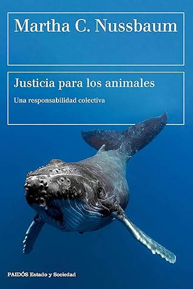

Justicia para los animales: Una responsabilidad colectiva (Estado y Sociedad) (Spanish Edition)
Reseña por Jorge I. Zuluaga

Ver detalles · Ver reseña en GoodReads (necesita cuenta)
Solo se me ocurren, para comenzar esta reseña, estos superlativos, que tal vez molesten a personas más objetivas. Ellos describen fielmente lo que me quedó de este fantástico texto de Martha Nussbaum, un libro que disfruté de la primera a la última página.
Los filósofos enredan hasta un saludo, como decimos en mi país (Colombia). Sin embargo, Nussbaum en este texto (y en otros que he leído salidos de su pluma) demuestra que con los problemas centrales de la crisis ecosocial que vivimos (desigualdad, hambre, crueldad animal) no hay que andarse con tecnicismos. Se debe escribir para que cualquiera entienda.
"Justicia para los animales" desarrolla una propuesta filosófica y jurídica para, como su nombre lo indica, encontrar las mejores maneras de hacer justicia con los demás animales con los que compartimos la biosfera. No es un libro técnico, ni un libro académico, pero creo que es lo suficientemente detallado para entender que las propuestas de Nussbaum pueden implementarse exitosamente en muchas sociedades humanas, mejorando las condiciones de vida de todos los animales, incluyéndonos.
El libro comienza con una revisión amplia y muy ilustrativa de las diversas posiciones filosóficas que se han asumido a lo largo de la historia alrededor del estatus de los animales desde la perspectiva humana. Comenzando con la denominada scala naturae, la más antigua de las posturas, que, como su nombre lo indica, ubica a los animales en una especie de pirámide de desarrollo o escalera evolutiva, con los humanos naturalmente encabezando la pirámide y por lo tanto mereciendo un trato privilegiado (la excepcionalidad humana); pasa después por el enfoque utilitarista, tan común en el conservacionismo biologicista del presente, que busca minimizar el sufrimiento, pero que deja por fuera las experiencias individuales de los animales; y llega hasta el enfoque kantiano, desarrollado modernamente por la filósofa Christine Korsgaard, que reconoce que todos los animales sintientes son fines en sí mismos y no pueden ser tratados como objetos para los fines humanos.
Durante la presentación de cada uno de los enfoques que se han considerado en la historia, Nussbaum procede a hacer una crítica más o menos exhaustiva de por qué fallan para resolver el problema que hemos creado los humanos para los demás animales: la destrucción de hábitats, la extinción por causas no biológicas, y el encierro, la esclavitud y la tortura a la que los hemos sometido para que cumplan funciones para nosotros.
Como solución a los problemas de los que esos enfoques adolecen, Nussbaum presenta su propio enfoque que denomina enfoque de las capacidades y que, en pocas palabras (hay que leer el libro para conocerlo en todos sus detalles), plantea que debemos conocer a los animales no humanos y entender cuáles son los objetivos que persiguen en su vida, cuáles son los medios que buscan para lograr esos objetivos. Como nuestra intervención en la naturaleza es tan poderosa, estamos en la obligación de partir de ese conocimiento para ofrecer o garantizar a todos esos animales los medios para desarrollar sus capacidades. Nuestras acciones de conservación y nuestras leyes deberían, según la propuesta de la filósofa, alinearse con ese objetivo.
Lo mejor del libro, como dije antes, es que no solo se trata de una colección árida de textos filosóficos o jurídicos para justificar este programa, sino una lúcida exposición que no deja duda de que puede implementarse sin muchas dificultades en los sistemas legales de los países del mundo. El libro incluye, además, interesantes capítulos dedicados a los problemas centrales que deben considerarse para resolver "el problema de los animales no humanos". Temas como la definición de la sintiencia y el conato (un término nuevo que aprendí leyendo este libro), la muerte, los dilemas trágicos, la relación diferencial que tenemos con los animales de compañía en contraste con los animales salvajes, la responsabilidad humana, entre muchos otros. ¡Una maravilla!
Hace unos meses tuve en Twitter una discusión bastante salida de tono con biólogos conservacionistas y con oscuros personajes antianimalistas que rondan en esa red social. En la discusión, yo defendía la idea de que hay que ser "individualmente empáticos" en el caso particular de los hipopótamos del Magdalena Medio colombiano, que estaban a punto de sufrir la eliminación a través de cacería controlada. Para quienes no los conozcan, los hipopótamos del Magdalena son una población de estos animales, considerados aquí una "especie invasora" (como se la llama técnicamente), que fue indebidamente introducida en el ecosistema por las excentricidades de los narcotraficantes colombianos de los años ochenta. Hoy, constituyen una amenaza para muchas especies locales y el control de su población se ha convertido en un problema muy serio para las autoridades del país.
Ojalá hubiera leído a Nussbaum antes de esa discusión.
Este libro está lleno de los elementos filosóficos y jurídicos que soportan mi posición, posición que todavía conservo y que sostiene que cada uno de esos hipopótamos está allí buscando desarrollar sus capacidades como mejor puede (ese es su conato) y no merece morir a manos de los humanos, quienes somos los responsables de que hayan nacido en un ecosistema ajeno a su especie.
Para mi sorpresa, en este libro aprendí que Colombia es el único país que ha reconocido derechos ciudadanos individuales a los hipopótamos, de modo que —y esta es una de las propuestas más interesantes de la filósofa— estos animales puedan presentar una demanda ante el Estado, naturalmente no ellos mismos, sino elevada por humanos en su representación, como ocurre, por ejemplo, con personas con limitaciones mentales. Esta fue una de las propuestas que hice en medio de las discusiones en Twitter, discusiones que solo terminaron con bloqueos mutuos y borrando trinos para evitar el trolling tan común en esa red social.
En fin. Sean animalistas, como me identifico yo, o no, ¡lean ya "Justicia para los animales"!